What is ThumbFish
ThumbFish is a simple and free utility for scientists and people working with chemical files to display and analyze common chemical formats. It integrates with Windows and provides molecule Thumbnail, Preview, Search and other useful features. ThumbFish can show you a preview of the structure contained in a particular chemical file (just like a thumbnail is generated for your JPEGs). Not just that, it can also calculate and show some common properties of that structure and all this without opening any third-party chemistry application. The best part about ThumbFish is that it sits inside Windows Explorer without interferring with other programs and is either involved automatically to generate thumbnails or manually by right-clicking on supported format file to perform some operations such as Save or Extract Molecules.
 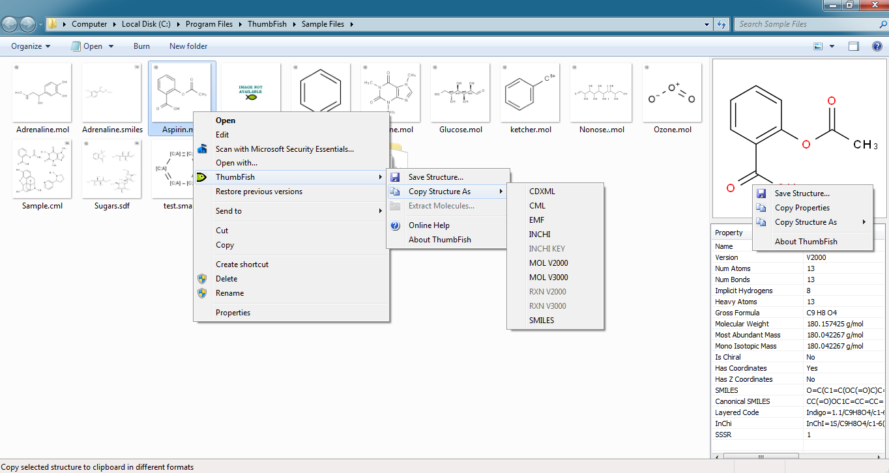
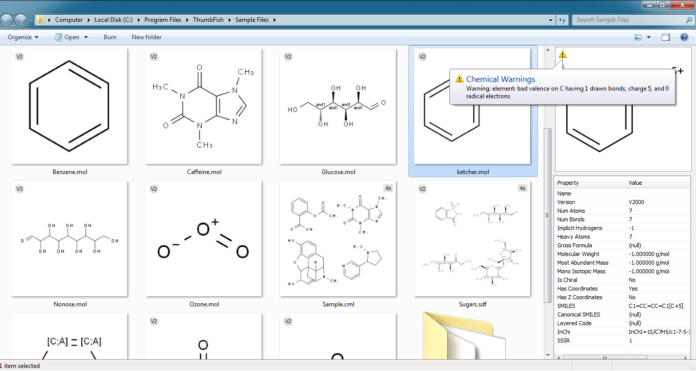
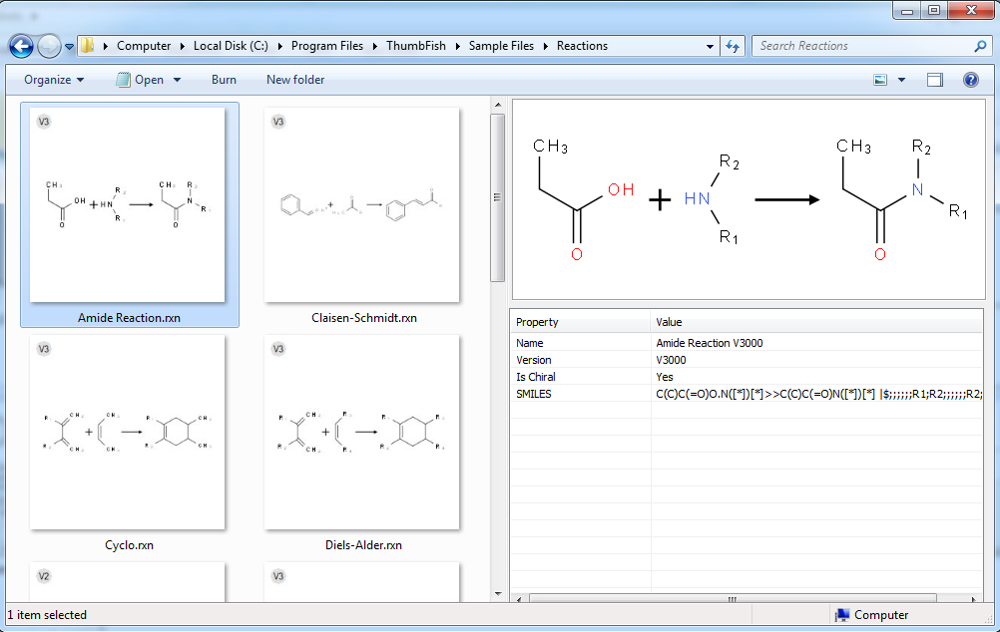
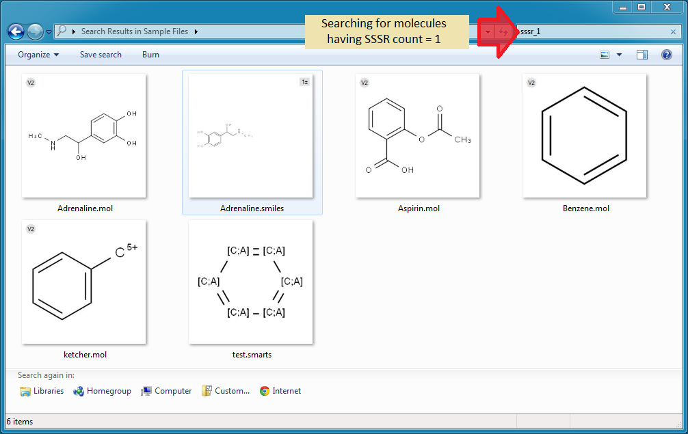
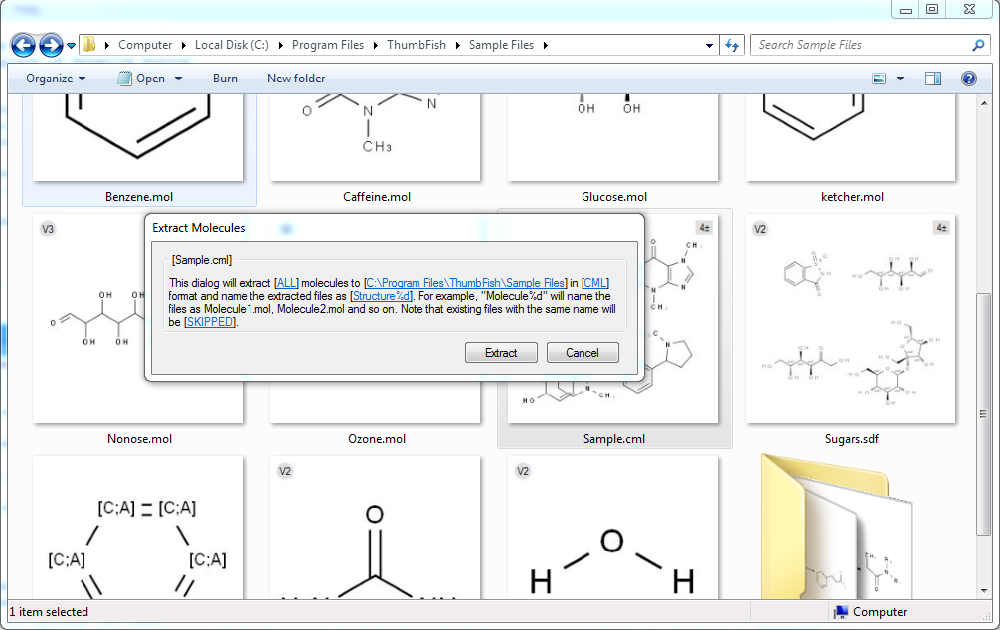
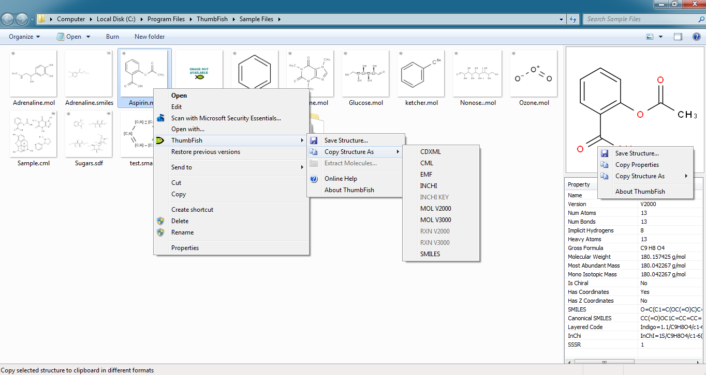
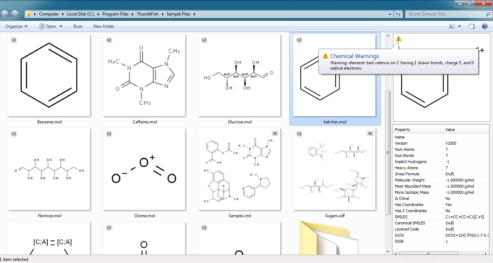
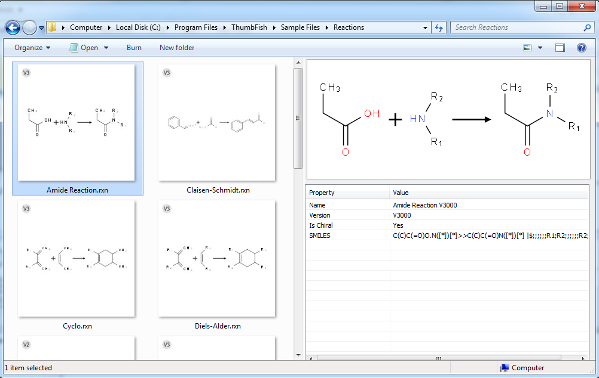
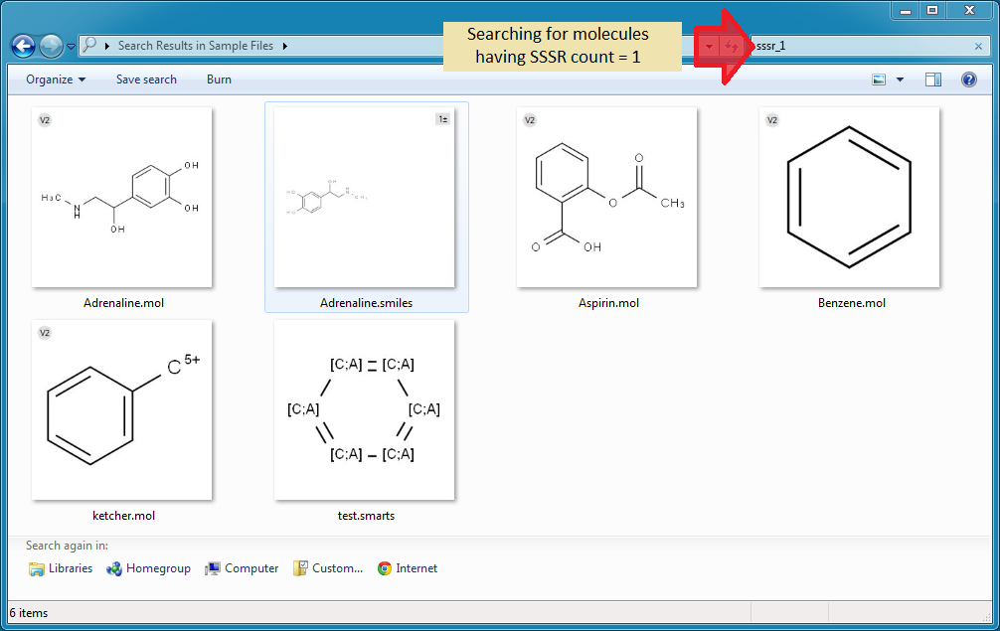
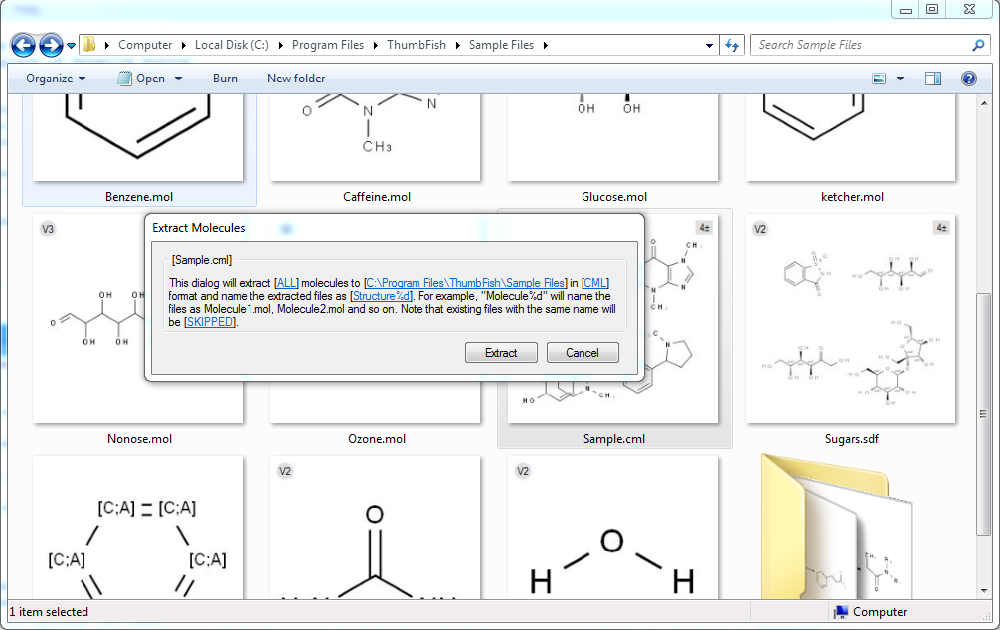
{kind=link}
{kind=link}
{kind=link}
{kind=link}
{kind=link}
ThumbFish can be used:
- By scientists to quickly identify chemical files during experiments and analysis
- In classrooms to quickly view chemical structures and properties
- During demos to identify the input files used and to verify the output
- By developers working on chemical programs to verify the output generated by their programs
- By software testers to identify input files for their test cases
- MOL (MDL Molfile Format - V2000 and V3000)
- RXN (Reaction file - V2000 and V3000)
- SMILES (Simplified Molecular Input Line Entry Specification)
- SMARTS (SMiles ARbitrary Target Specification)
- SDF (Structure Data File - V2000 and V3000)
- RDF (Reaction Data File - V2000 and V3000)
- CML (Chemical Markup Language)
ThumbFish is NOT dependent on any specific commercially available Chemistry application. It uses the open source organic chemistry toolkit named Indigo by GGA Software. The other open source component used in ThumbFish is Pantheios logging library.
ThumbFish contains the following Shell Extension Handlers for Windows OS:- Thumbnail Handler: Displays thumbnails for supported formats to easily identify structure files
- Preview Handler: Displays coloured preview and calculates properties for selected file
- Search Handler: Searches for a structure based on its properties
- Context-Menu Handler: Provides additional useful options on supported structure files
| Windows Vista SP2 | Windows 7 SP1 | Windows 8.1 |
Getting Started
Here is how to quickly try out the main features in 3 easy steps using the included sample files. The first thing that you will see after installing ThumbFish is the "ThumbFish Sample Files" shortcut link on your desktop. This is a shortcut to a folder containing some sample molecule and reaction files and is automatically installed by the setup program. Double-click the sample files link on your desktop to open it in Windows Explorer.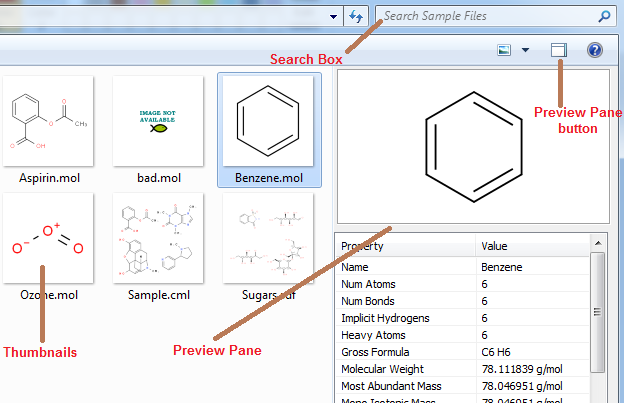
1... View Thumbnails
When you open the Sample Files folder, Windows will call ThumbFish components to generate thumbnails for the files if the thumbnail view is currently active. You can switch to thumbnail view by right clicking inside the folder and selecting a View or using the View item from the menu. Try View >> Large Icons.
2... Preview
Preview Pane needs to be enabled to view molecule previews. To enable preview pane in Windows 7, click the preview pane button on the top right side in Windows Explorer (see screenshot above). In Windows 8, use the View tab and select Preview Pane. Once the preview pane is enabled, select any file to view its image and properties.
3... Search for molecules
To quickly search for molecules containing 13 atoms, type "na_13" in the search box (see screenshot above). This should filter the current view and show only 3 molecules (Adrenaline.mol. Adrenaline.smiles and Aspirin.mol). If its not working for you then you need to enable searching in "File Contents". In Windows 7, click "File Contents" in "Search Again In" section inside Windows Explorer where the thumbnails are displayed. In Windows 8, goto the "Search Tab" then "Advanced Options" and enable "File Contents". Check out Search Handler section for more details.
Components
Thumbnail Handler
Thumbnail handler displays thumbnail images in Windows Explorer for supported chemical formats. In case of multi-molecule files such as SDF or CML, the thumbnail shows first four structures (first two for RDF) to help users identify a particular file without opening the file in the associated program. Thumbnails also display the following information in corners:- Connection Table Version: The connection table version is displayed on the top left as either V2 or V3 depending on whether its a V2000 or V3000 MOLFILE. Only displayed for MOL, RXN, SDF and RDF files.
- Approx Record Count: Displayed on the top right side, this is the approximate number of records in a multi-molecule file such as SDF, RDF and CML. The approximation is based on the size of first four records in the file.
{kind=link}
Preview Handler
{kind=link}
Preview window can be used to view properties associated with a structure file. Properties such as Name, Formula, SMILES, InChI etc are displayed in the property area. These properties can be copied to the clipboard by using the "Copy Properties" option in the context-menu on the preview window. It copies all available properties to the clipboard in a Key:Value format. Preview window can also display Chemical Warnings for a structure about incorrect valence and ambigious hydrogens. Chemical Warning icon is displayed on the top left side of preview window. It is only displayed if there are chemical warning for the selected structure. Moving your mouse over this icon will display the warnings in a tooltip window.
If you do not see previews in Windows Explorer then try the following steps to enable file previews:- [Windows Explorer Menu:: Tools >> Folder Options >> View >>Show preview handlers in preview pane]
- [Windows Explorer >> Organize (Extreme Left on toolbar) >> Layout >>Preview Pane]
- Save Structure: Saves a structure to disk in different formats: PNG, PDF, SVG, EMF and CDXML. Note that the structures can only be saved in user's AppData\LocalLow directory e.g.
C:\Users\[USER]\AppData\LocalLow. See Known Limitations for details. - Copy Properties: Copies the currently displayed structure properties to clipboard in Key:Value format
- Copy Structure As: Copies the current structure to clipboard in different useful formats including MDL MOL and ChemDraw's CDXML format
Search Handler
Search handlers are used by Windows Search Engine to index information inside proprietary files. ThumbFish search handler indexes properties such as formula, atom-count, bond-count, mass etc inside supported files and indexes them so that the user can search for structures with these properties. Normally, the search engine only searches for file names and not inside a file's contents but the search handler makes it possible to search by molecule properties. For example if there are 100 structure files inside a folder then typing benzene will search for file names containing the word benzene and matching files will be returned. With a Search handler such as this one, a user can search for structures having 13 atoms by typing na_13.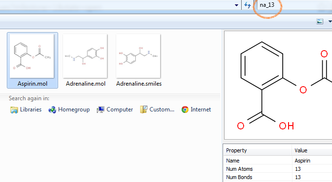
Setting Up Search
- Make sure Windows Search is enabled in Control Panel
[Control Panel >> Programs and Features >> Turn Windows Features on or off >> Windows Search] - Make sure that the folder in which you want to search is included for indexing
[Control Panel >> Indexing Options] (your folder should be listed here)
Troubleshooting Search
You can try the following steps if search is not working as expected.- Rebuild the search index in case it is corrupt or not built because of user activity
[Control Panel >> Indexing Options >> Advanced >> Rebuild]
Note that this can take some time based on the number of files to index - Enable to always search a file's content
[Explorer >> Folder Options >> Search >> What to Search >> Always search file name and contents] - Finally to always re-index and search
[Explorer >> Tools >> Options >> Search >> Don't use the index when searching in file folders...] - Still not working, check the ThumbFish Log for error messages at the following location
C:\Users\[USER]\AppData\LocalLow\ThumbFish.log
Search Examples
The following property searches are possible. Note that an underscore '_' is used instead of an equals to '=' sign.- Name: name_{x} [e.g. n_benzene] Note that name is the structure name not the file name
- Formula: formula_{x} [e.g. formula_c6h6]
- NumAtoms: na_{x} [e.g. na_12]
- NumBonds: nb_{x} [e.g. nb_10]
- Molecular Weight: mweight_{x} [e.g. mweight_207]
- Implicit Hydrogens: impl_{x} [e.g. impl_4]
- Heavy Atoms: heavya_{x} [e.g. heavya_2]
- Most Abundant Mass: mamass_{x} [e.g. mamass_106]
- Mono Isotopic Mass: mimass_{x} [e.g. mimass_210]
- Chirality: chiral_{x} [e.g. chiral_yes]
- Has Coordinates: hascoord_{x} [e.g. hascoord_yes]
- Has Z Coordinates: haszcoord_{x} [e.g. haszcoord_no]
- SSSR: sssr_{x} [e.g. sssr_1]
Context-Menu handler
ThumbFish context-menu is integrated into the Window Explorer context-menu and provides commands that work on single and multi molecule files. The context-menu provides the Export Molecules as an additional command other than Save and Copy which are also present in the preview content-menu. Export Molecules command works on multi-molecule files such as SDF and can be used to extract molecules in different formats as separate files.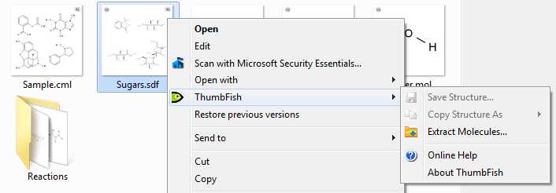
Features
Extract Molecules
Extract Molecule feature is available in the ThumbFish Context-Menu when you right-click on a supported chemical file in Windows Explorer. This feature can be used to extract molecules from a multi-molecule file. The extracted molecules can be converted to different formats on the fly and saved as separate files. For example a number of MOL files can be extracted from a SDF file. This feature is only enabled when a single multi-molecule file (SDF, RDF, CML, SMILES) is selected.
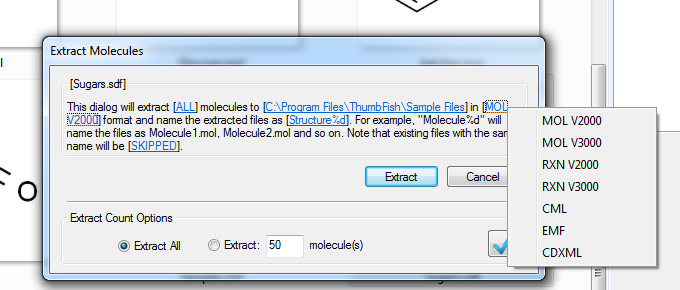The extract dialog follows the "Statement UI" format which is described on the product blog. Basically, Statement UI describes the operation using statements and parts of it are configurable. The above dialog has five configurable parts. You can click on any of the links and change the options. The configurable links can display a menu, open a dialog or expand the extract dialog to display an area for additional input such as shown in the dialog above.
Known Limitations
- Copying structure as Enhanced Metafile (EMF) Picture does not display atom labels.
- When a structure is saved using the "Save Structure" command in Preview Handler then it can only be saved in user's AppData\LocalLow directory. This is because the Preview Handler runs in a low integrity mode under Windows and does not have access to other locations.
- The Copy Structure As >> InChi Key command is NOT operational. The command has been intentionally disabled due to an issue associated with the Indigo provider.
- The SaveAs >> Connection Table (.ct) command saves a prettified connection table and not the standard MDLCT one. The standard one saves a line length character and then the actual line so it may contain NULL characters. Prettified one is human readable as it contains simple data lines ending with a CRLF.
- Saving Reaction file as CDXML or CML is not supported due to issues in the provider.